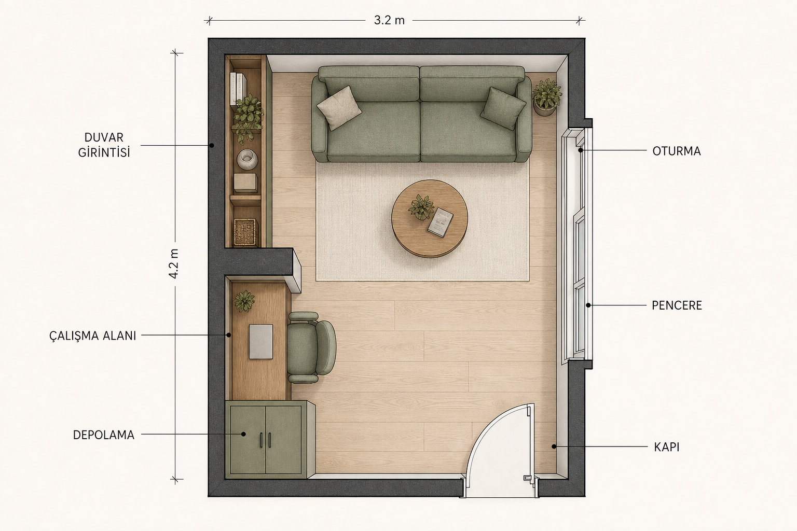
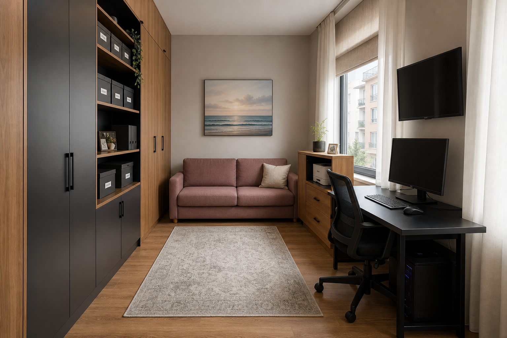
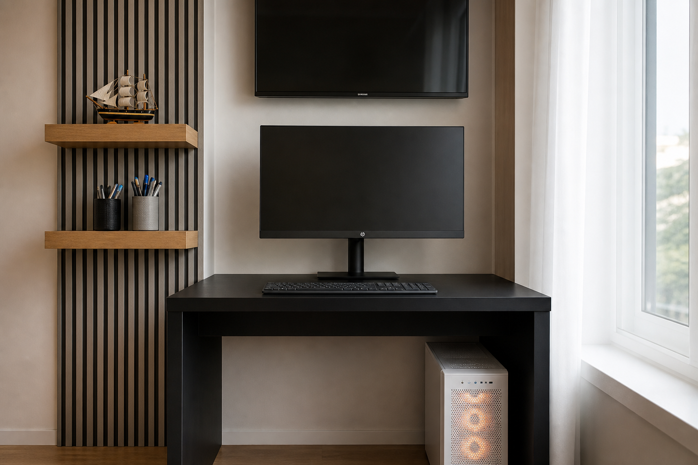
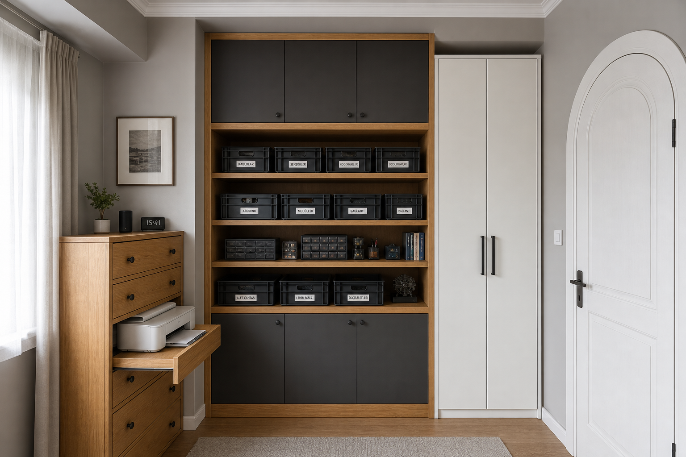

Kapı
Beyaz iç kapı, kemerli panel, gümüş kollu kilit. Giriş aksını sağ tarafta sabitleyen ana açıklık; kapı kanadı içeri açılıyor — mobilya buradan uzak tutulmalı.
Fotoğraf analizi · Kapı · Cam · Duvar girintileri
Dar, işlevsel bir oda: çalışma, dinlenme ve elektronik depolama tek düzende.
Beş açıdan okunan sabitler — mobilya değil, duvar ve açıklıklar.
Beyaz iç kapı, kemerli panel, gümüş kollu kilit. Giriş aksını sağ tarafta sabitleyen ana açıklık; kapı kanadı içeri açılıyor — mobilya buradan uzak tutulmalı.
Sağ duvarda büyük üç bölmeli pencere (üst yatay + iki dikey kanat). Zebra stor + tül perde. Odanın tek güçlü gün ışığı; monitör parlaması için masa pencereye paralel veya 90° olmalı.
Sol duvarda ~50–60 cm derinlikte dikey niş. Şu an koyu raflarla dolu. Yerden tavana gömme depolama için en doğru yer — kablo / adaptör / kutu envanteri buraya kapanır.
Siyah-beyaz şeritli kolon / çıkıntı, masayı iki duvar arasına sıkıştırıyor. TV duvara asılı; masa genişliği sabit — yüzey sadeleşmeli, kasa alta inmeli.
Açık gri / kırık beyaz düz boya, klasik kartonpiyer. Mevcut seascape tablo ve pembe kanepe duvarını “oturma bandı” olarak koruyoruz.
Kızıl-kahve laminat. Dar koridor hissi var; geçiş yolu kapı → kanepe ortasında açık kalmalı (~70–80 cm).
Tahmini ölçü: ~3.1 × 4.2 m. Duvar girintileri ve pencere konumu değişmez; eşya katmanları yeniden yazılır.

Her duvarın bir işi var. İlk bakışta tek kompozisyon; içeride net işlev ayrımı.
Mevcut açık raflar yerine yerden tavana gömme sistem: altta kapaklı dolap (kablo, adaptör, kutu), ortada etiketli açık raflar, üstte nadir kullanılanlar. Türkçe etiketli siyah kasalar korunur, görünür kaos kaybolur.
Masa şeritli kolon ile pencere duvarı arasında kalır. Yüzeyde sadece monitör + klavye + mikrofon. Kasa masa altına. Duvar TV kalır ama monitörün üstündeki görsel gürültü (mantar pano, kablo) kalkar.
Pembe / gülkurusu kanepe kalır; üstünde tek deniz manzarası tablo. Klavyeler, kablolar ve battaniye yığınları kalkar. Yanında alçak yan sehpa yerine ince duvar rafı veya tek sepet.



Odada zaten var olan dil: gri duvar, meşe zemin, gülkurusu kanepe, bal rengi ahşap.
Duvar delmeden önce boşalt; sonra sabitle, en sonda dekor.